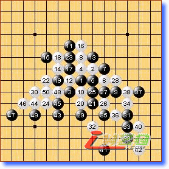

第十届世锦赛A组第五轮略评
#1 第十届世锦赛A组第五轮略评 作者：有志青年 发表时间：2007-8-11 22:24:37
第一局 黑方 Sushkov 白方 purk
年轻的purk发挥太不稳定，白8－9是常见的下法。对于这个8，黑9的牵制是显而易见的。随手？想过头了？本来预想是场好看的对局，就这样突然结束了。
第二局 黑方 Yamaguchi（山口） 白方 okabe（冈部宽） 黑胜
本局正是“好风凭借力，送我上青云。”
第三局 黑方 Chingin 白方 Karlsson 黑胜
Chingin的黑9选择不容易轻易定型的变化，与老将中盘斗力。白14看似轻妙，其实却给黑棋留下种种借用的余味（Karlsson应该是对黑棋后面的进攻有所预计的，14或许是为后面的攻防留下伏兵的手段，如果这样应该是老将误算了）。黑棋15～21下的比较快，22第一感来说应该是防上的，实战的22或许和14有某种关联吧。22防上，黑一时没有明显的胜机，22－32，23－10e局部倒是必胜，不过白有6L救命稻草，那样局面复杂有趣。当然，黑棋在大优形式下或许有更有利的选择，有兴趣可以深究。另外，实战25可以直接9m追胜。
第四局 黑方 吴镝 白方 oll 黑胜
本局可以说是吴镝的好局，黑棋对局面的控制让白棋完全处于被动。oll对此局面应该没有什么研究，24最强应该防7h。实战的24或许是欧洲棋手自信的体现吧，是想尽早摆脱被动局面。如同上盘的Karlsson负于Chingin一样，吴镝用精确的计算让oll继续垫底。
第五局 黑方 Savrasova 白方 Kozhin 白胜
这盘棋我想Savrasova这辈子都不会忘记的，黑棋这样被翻盘很难接受。36是败招，37黑棋已经必胜！关于这个12，我最早在实战中见到是2001年，“经纬杯十强赛”上陈伟对张进宇一局，当时张进宇就是下的本图的13。实战的17并非最强。
第六局 黑方 lio 白方 Taimla 白胜
本局至21与“44期日本名人战”长谷川vs河村一战相同（具体见ShowPost.asp?ThreadID=1748），Taimla的22变化，23还是应该防下比较好，当然有准备的话这个23也成立（将来白棋在左下做棋的时候黑方有强烈的反击手段，篇幅所限这里就不介绍了）。27无谋余味尽失，30局部绝好形！Taimla一定心情很舒畅。实战lio后面的下法很凌乱，右下的局部凭直觉黑就应该无胜。
